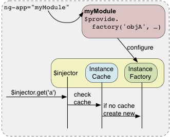

Dependency Injection (DI) is a software design pattern that deals with how components get hold of their dependencies. [Source document.]
The Angular injector subsystem is in charge of creating components, resolving their dependencies, and providing them to other components as requested.
DI is pervasive throughout Angular. You can use it when defining components or when providing run
and config blocks for a module.
Components such as services, directives, filters, and animations are defined by an injectable factory method or constructor function. These components can be injected with "service" and "value" components as dependencies.
Controllers are defined by a constructor function, which can be injected with any of the "service" and "value" components as dependencies, but they can also be provided with special dependencies. See Controllers below for a list of these special dependencies.
The run method accepts a function, which can be injected with "service", "value" and "constant"
components as dependencies. Note that you cannot inject "providers" into run blocks.
The config method accepts a function, which can be injected with "provider" and "constant"
components as dependencies. Note that you cannot inject "service" or "value" components into
configuration.
See Modules for more details about run and config
blocks.
The way you define a directive, service, or filter is with a factory function. The factory methods are registered with modules. The recommended way of declaring factories is:
angular.module('myModule', [])
.factory('serviceId', ['depService', function(depService) {
// ...
}])
.directive('directiveName', ['depService', function(depService) {
// ...
}])
.filter('filterName', ['depService', function(depService) {
// ...
}]);We can specify functions to run at configuration and run time for a module by calling the config
and run methods. These functions are injectable with dependencies just like the factory functions
above.
angular.module('myModule', [])
.config(['depProvider', function(depProvider) {
// ...
}])
.run(['depService', function(depService) {
// ...
}]);Controllers are "classes" or "constructor functions" that are responsible for providing the application behavior that supports the declarative markup in the template. The recommended way of declaring Controllers is using the array notation:
someModule.controller('MyController', ['$scope', 'dep1', 'dep2', function($scope, dep1, dep2) {
...
$scope.aMethod = function() {
...
}
...
}]);Unlike services, there can be many instances of the same type of controller in an application.
Moreover, additional dependencies are made available to Controllers:
$scope: Controllers are associated with an element in the DOM and so are
provided with access to the scope. Other components (like services) only have
access to the $rootScope service.Angular invokes certain functions (like service factories and controllers) via the injector. You need to annotate these functions so that the injector knows what services to inject into the function. There are three ways of annotating your code with service name information:
$inject property annotationThis is the preferred way to annotate application components. This is how the examples in the documentation are written.
For example:
someModule.controller('MyController', ['$scope', 'greeter', function($scope, greeter) {
// ...
}]);Here we pass an array whose elements consist of a list of strings (the names of the dependencies) followed by the function itself.
When using this type of annotation, take care to keep the annotation array in sync with the parameters in the function declaration.
$inject Property AnnotationTo allow the minifiers to rename the function parameters and still be able to inject the right services,
the function needs to be annotated with the $inject property. The $inject property is an array
of service names to inject.
var MyController = function($scope, greeter) {
// ...
}
MyController.$inject = ['$scope', 'greeter'];
someModule.controller('MyController', MyController);In this scenario the ordering of the values in the $inject array must match the ordering of the
parameters in MyController.
Just like with the array annotation, you'll need to take care to keep the $inject in sync with
the parameters in the function declaration.
The simplest way to get hold of the dependencies is to assume that the function parameter names are the names of the dependencies.
someModule.controller('MyController', function($scope, greeter) {
// ...
});Given a function the injector can infer the names of the services to inject by examining the
function declaration and extracting the parameter names. In the above example $scope, and
greeter are two services which need to be injected into the function.
One advantage of this approach is that there's no array of names to keep in sync with the function parameters. You can also freely reorder dependencies.
However this method will not work with JavaScript minifiers/obfuscators because of how they rename parameters.
Tools like ng-annotate let you use implicit dependency
annotations in your app and automatically add inline array annotations prior to minifying.
If you decide to take this approach, you probably want to use ng-strict-di.
Because of these caveats, we recommend avoiding this style of annotation.
You can add an ng-strict-di directive on the same element as ng-app to opt into strict DI mode:
<!doctype html>
<html ng-app="myApp" ng-strict-di>
<body>
I can add: {{ 1 + 2 }}.
<script src="angular.js"></script>
</body>
</html>Strict mode throws an error whenever a service tries to use implicit annotations.
Consider this module, which includes a willBreak service that uses implicit DI:
angular.module('myApp', [])
.factory('willBreak', function($rootScope) {
// $rootScope is implicitly injected
})
.run(['willBreak', function(willBreak) {
// Angular will throw when this runs
}]);When the willBreak service is instantiated, Angular will throw an error because of strict mode.
This is useful when using a tool like ng-annotate to
ensure that all of your application components have annotations.
If you're using manual bootstrapping, you can also use strict DI by providing strictDi: true in
the optional config argument:
angular.bootstrap(document, ['myApp'], {
strictDi: true
});This section motivates and explains Angular's use of DI. For how to use DI, see above.
For in-depth discussion about DI, see Dependency Injection at Wikipedia, Inversion of Control by Martin Fowler, or read about DI in your favorite software design pattern book.
There are only three ways a component (object or function) can get a hold of its dependencies:
new operator.The first two options of creating or looking up dependencies are not optimal because they hard code the dependency to the component. This makes it difficult, if not impossible, to modify the dependencies. This is especially problematic in tests, where it is often desirable to provide mock dependencies for test isolation.
The third option is the most viable, since it removes the responsibility of locating the dependency from the component. The dependency is simply handed to the component.
function SomeClass(greeter) {
this.greeter = greeter;
}
SomeClass.prototype.doSomething = function(name) {
this.greeter.greet(name);
}In the above example SomeClass is not concerned with creating or locating the greeter
dependency, it is simply handed the greeter when it is instantiated.
This is desirable, but it puts the responsibility of getting hold of the dependency on the
code that constructs SomeClass.

To manage the responsibility of dependency creation, each Angular application has an injector. The injector is a service locator that is responsible for construction and lookup of dependencies.
Here is an example of using the injector service:
// Provide the wiring information in a module
var myModule = angular.module('myModule', []);Teach the injector how to build a greeter service. Notice that greeter is dependent on the
$window service. The greeter service is an object that contains a greet method.
myModule.factory('greeter', function($window) {
return {
greet: function(text) {
$window.alert(text);
}
};
});Create a new injector that can provide components defined in our myModule module and request our
greeter service from the injector. (This is usually done automatically by Angular Bootstrap).
var injector = angular.injector(['myModule', 'ng']);
var greeter = injector.get('greeter');Asking for dependencies solves the issue of hard coding, but it also means that the injector needs to be passed throughout the application. Passing the injector breaks the Law of Demeter. To remedy this, we use a declarative notation in our HTML templates, to hand the responsibility of creating components over to the injector, as in this example:
<div ng-controller="MyController">
<button ng-click="sayHello()">Hello</button>
</div>function MyController($scope, greeter) {
$scope.sayHello = function() {
greeter.greet('Hello World');
};
}When Angular compiles the HTML, it processes the ng-controller directive, which in turn
asks the injector to create an instance of the controller and its dependencies.
injector.instantiate(MyController);This is all done behind the scenes. Notice that by having the ng-controller ask the injector to
instantiate the class, it can satisfy all of the dependencies of MyController without the
controller ever knowing about the injector.
This is the best outcome. The application code simply declares the dependencies it needs, without having to deal with the injector. This setup does not break the Law of Demeter.